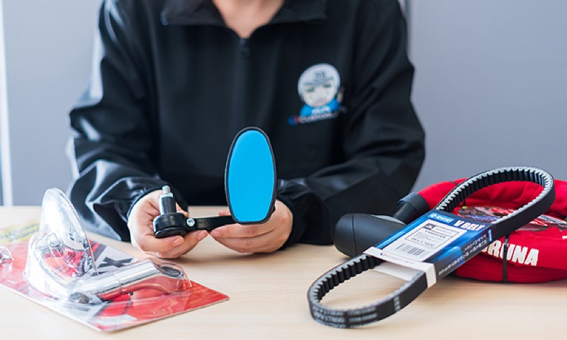

学生のうちに、
ブランドと事業をつくる。
創業70年のルーツ×新ブランドを次々に生むベンチャー気質。
カスタムジャパンの長期インターンは、"手伝い"ではなく"実戦"です。
WHY CUSTOM JAPAN
「任される」が、
いちばん成長する。
私たちはこの数年で、電動モビリティ「eXs」、スマートガジェット群「スマートシリーズ」、世界ブランドの日本展開(ASMAX・SP Connectなど)と、新しい事業を次々に立ち上げてきました。大阪・関西万博を走り、エヴァンゲリオンとコラボし、鈴鹿8耐に出展する——その現場は、いつも人手より挑戦の数のほうが多い。
だからインターンにも、企画書のコピー取りではなく「ひとつの持ち場」を任せます。市場調査から企画、SNSでの発信、制作、そして結果の数字まで。学生のうちに、事業の当事者になってください。

FIELD OF CHALLENGE
OPEN POSITIONS
募集中の2職種
どちらも社員メンターと二人三脚。興味と適性に合わせて、担当領域を一緒に設計します。
企画・マーケティング
PLANNING & MARKETING
新ブランド・新商品の立ち上げに、市場調査から参加。キャンペーン企画、広告運用とデータ分析、ブランド公式SNSの企画・投稿、海外メーカーとの取引サポートまで。50万SKU・30ブランドという素材を使い、打ち手が数字で返ってくる実戦の場です。エヴァコラボや鈴鹿8耐のような話題化案件に関わるチャンスも。

クリエイティブ制作
CREATIVE PRODUCTION
バナー・LP・商品画像・動画編集など、毎日世に出るクリエイティブを制作。慣れてきたら撮影ディレクションや売場・展示会ブースの世界観づくりなど、ブランドの「見せ方」の設計にも踏み込めます。実案件だけでポートフォリオが充実していく環境。デザイン・動画ツールの経験者歓迎です。
WHAT YOU GET
ここで得られる4つのもの
01実名で語れる実績
「◯◯ブランドのSNSを伸ばした」「万博に出たモビリティの販促を担当した」。就活のガクチカが、伝聞ではなく自分の実績になります。
02経営との距離ゼロ
役員・事業責任者と同じフロアで働き、意思決定の理由をその場で聞ける。会社がどう動くかを内側から学べます。
03ポートフォリオになる仕事
制作物・企画書・運用実績はすべて実案件。クリエイティブ職・マーケ職を目指す人の武器になります。
04乗り物×カルチャーの現場
モーターサイクルショー、鈴鹿8耐、サイクルモード。好きが仕事になる瞬間を、現場スタッフとして体感できます。
FOR THE AI GENERATION
AI時代に、どこで身を立てるか。
「AIに仕事を奪われるんじゃないか」「何を勉強すれば食べていけるのか」——
その不安、ごまかさずに一緒に考えます。
結論から言うと、AI時代に強いのは「AIが代替できない事業基盤」の上で「AIを使う側」に回った人です。カスタムジャパンがその条件を満たしている理由と、ここで注力してほしいことを、率直に書きます。
モノが動く、物理世界の事業
AIは文章もコードも書けますが、バイクの部品を今日中に整備工場へ届けることはできません。50万SKUの在庫と当日出荷の物流網という「フィジカルな基盤」は、AIに置き換えられる側ではなく、AIで強くなる側の事業です。
70年分の、誰も持っていないデータ
AI時代の価値の源泉は「独自データ」です。世界最大級のバイク適合データベース、全国9万店との取引履歴、半世紀を超える部品情報。この資産はAIを賢くする側のもので、後発が真似できません。
ニッチ市場のリーダーという位置
巨大市場はAIスタートアップと大資本の主戦場になります。モビリティアフターマーケットというニッチで確固たる地位があるからこそ、価格競争に巻き込まれず、AIを道具として使う余裕があります。
だから、若いうちにここへ注力してほしい
- FOCUS 01
AIを「使い倒す側」の実務経験
企画・制作・分析の現場で、AIツールを使うことを歓迎します。「AIを禁止する会社」と「AIで若手の生産性を上げる会社」なら、選ぶべきは後者。使い方は仕事の中でしか身につきません。
- FOCUS 02
AIの外側にある、体温のある仕事
海外メーカーとの交渉、展示会やレースの現場、ブランドの世界観づくり。人と会い、信頼をつくり、熱量を動かす仕事はAIに代替されません。ここでしか積めない経験を、学生のうちに。
- FOCUS 03
「決める」経験
AIの進化で、実行のコストはどんどん下がります。価値が上がるのは「何をやるか決める人」。インターンに小さくても持ち場と意思決定を任せるのは、この筋肉を鍛えてほしいからです。
他の会社と、何がちがうのか
大手企業のインターン
ブランド力と研修は魅力。ただし数日間のプログラム型が多く、分業の一部を体験して終わることも。事業の全体像や意思決定には、なかなか触れられません。
スタートアップのインターン
裁量は大きい一方、事業基盤が不安定で、教える余裕がない環境も。任されているようで、実は放置されている——というミスマッチも起こりがちです。
カスタムジャパン
創業以来20年以上連続増収の安定した土台の上で、新ブランド立ち上げという挑戦の現場に入れる。社員メンターがつき、裁量と伴走の両方がある。「安定×挑戦」のいいとこ取りが、ここの本質です。
REQUIREMENTS
募集要項
| 募集職種 | 企画・マーケティング / クリエイティブ制作 |
|---|---|
| 対象 | 大学生・大学院生・専門学校生(学年不問) |
| 期間 | 6ヶ月以上を推奨(長期での成長を重視するため) |
| 勤務 | 週3日以上。テスト期間など学業優先のシフト調整OK |
| 場所 | 大阪本社(大阪市中央区日本橋2-9-16 日本橋センタービル6F) |
| 待遇 | 時給1,300円〜 / 交通費支給 |
| 歓迎 | 乗り物・ガジェット好き / SNSをよく使う / デザイン・動画ツール経験 / 語学を活かしたい方 ※バイクの知識は不要です |
| 選考 | エントリー → カジュアル面談(オンライン可)→ 職場見学 → 参画 |
FAQ
よくある質問
バイクや自転車に詳しくないのですが大丈夫ですか？
大丈夫です。必要なのは知識より「面白がる力」。乗り物の知識は仕事の中で自然と身につきますし、詳しくないからこそ見える初心者目線も貴重な戦力です。
未経験でも応募できますか？
できます。社員メンターがつき、小さな担当から始めて段階的に任せる範囲を広げていきます。制作職はツール経験があるとスタートが早いです。
授業やテストとの両立はできますか？
学業優先が原則です。シフトは週ごとに調整でき、テスト期間・就活期間の調整も柔軟に対応します。
就職活動に活かせますか？
実案件の実績・制作物・数字がそのままガクチカ/ポートフォリオになります。ビジネスマナーや商談同席の経験は、業界を問わず武器になります。
職種の中で、複数の領域に興味があります。
掛け持ち歓迎です。例えば企画・マーケティングの中で「SNS×海外取引」、クリエイティブ制作の中で「動画×撮影」など、興味の組み合わせで持ち場を設計します。